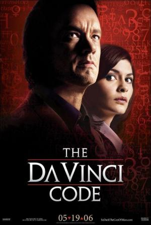

El código Da Vinci |
||
|---|---|---|
|  | Sinopsis: El catedrático y afamado simbologista Robert Langdon (Tom Hanks) se ve obligado a acudir una noche al Museo del Louvre, cuando el asesinato de un restaurador deja tras de sí un misterioso rastro de símbolos y pistas. Con la ayuda de la criptógrafa de la policía Sophie Neveu (Audrey Tautou) y poniendo en juego su propia vida, Langdon descubre que la obra de Leonardo Da Vinci esconde una serie de misterios que apuntan a una sociedad secreta encargada de custodiar un antiguo secreto que ha permanecido oculto durante dos mil años... |
Director:Ron Howard Reparto:Tom Hanks, Audrey Tautou, Ian McKellen Año: 2006 Duracion:147 min Pais:Estados Unidos |
Criticas Profesionales:Robert EbertVeni, Vidi, Da Vinci. (...) La novela es completamente absurda. La película es absurdamente entretenida. (...) El film funciona: es apasionante e intrigante |
Trailer |
Obtener:AlquilarComprar |
Registrate/Iniciar Sesion